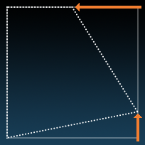

2.5D — Perspective and Depth
This guide explains how you can achieve interesting 2.5D effects in Solar2D. While Solar2D is not a true 3D engine, its 2.5D capabilities allow you to simulate effects that appear
Background
During the Renaissance, Filippo Brunelleschi demonstrated the geometrical method of perspective that is still used today. This method solved the problem of how to represent three dimensional objects on a 2D plane. Even today, this remains the basis of how 3D computer graphics are represented on the screen. In essence, your eye is tricked into believing that what is rendered on a flat screen is actually 3D.
Perspective
Quadrilateral Distortion
Several display objects can be distorted by general quadrilaterals (quads). For objects with quadrilateral support, each corner has an associated x,y property which specifies how the corner of the object should be distorted. These properties default to 0,0, meaning there is no offset.
| Object | Method | Quadrilateral Support |
|---|---|---|
| Display Group | display.newGroup() | |
| Standard Image | display.newImage() | ✓ |
| Dynamically-Selected Image | display.newImageRect() | ✓ |
| Text | display.newText() | |
| Animated Sprite | display.newSprite() | ✓ |
| Rectangle | display.newRect() | ✓ |
| Circle | display.newCircle() | |
| Rounded Rectangle | display.newRoundedRect() | |
| Line | display.newLine() | |
| Polygon | display.newPolygon() | |
| Embossed Text | display.newEmbossedText() | |
| Container | display.newContainer() | |
| Snapshot | display.newSnapshot() | ✓ |
| Particle Emitter | display.newEmitter() |
The following diagram shows how an image is distorted by moving the
(x1,y1) |
(x4,y4) |
||||
 |
→ |  |
 | ||
(x2,y2) |
(x3,y3) |
local logo = display.newImage( "corona-logo.png" ) logo.path.x4 = -110 logo.path.y3 = -55
Transitional Distortion
Just as individual corner points can be explicitly set to distort a display object, you can also transition the points for a gradual distortion effect.
Note that you must reference the object.path property as the first argument in the transition method since you are transitioning the object’s path, not the object itself. Then, in turn, include the specific corner points of the path as the target properties of the transition.
-- Use "logo.path" as the first argument, not "logo"
transition.to( logo.path, { time=2000, x2=20, y2=-20, x4=-40, y4=40 } )
The following sample shows some of the interesting effects you can achieve using transitional distortion.
Z-axis Ordering
All Solar2D display objects exist on the z=0 plane, but they can be ordered as shown in the Group Programming guide. When you distort an image, it looks like it exists in a 3D world, but it actually remains in the same plane. Thus, all of the standard object ordering rules will continue to be honored.
Billboarding
In the Solar2D graphics model, billboarding is available toll-free. Just create a group and ensure it’s the top-most by calling group:toFront().
Mode 7
In Super Nintendo Mode 7, you could only place the background in perspective. In Solar2D, you can distort any rectangle to make the image appear in perspective.
Meshes
You can build more complex effects by creating a mesh of rectangles and distorting all of the corners for a particular intersection point in the mesh.

local group = display.newGroup() local a = display.newRect( group, 0, 0, 300, 300 ) local b = display.newRect( group, 300, 0, 300, 300 ) local c = display.newRect( group, 0, 300, 300, 300 ) local d = display.newRect( group, 300, 300, 300, 300 ) local intersectionX = -90 local intersectionY = -70 a.path.x3 = intersectionX a.path.y3 = intersectionY b.path.x2 = intersectionX b.path.y2 = intersectionY c.path.x4 = intersectionX c.path.y4 = intersectionY d.path.x1 = intersectionX d.path.y1 = intersectionY
Depth
Z-axis Scaling
In Solar2D, you can simulate depth by scaling objects as they move closer or further from the viewer. This can be used to create an illusion of relative depth, for example a series of trees receding into the distance.
Scrolling
Placing images in the background is
Parallax
Parallax provides a sense of “distance” between the camera and moving objects that recede into the simulated space.
Skybox/Skydome
In Solar2D, the skybox/skydome effect is available